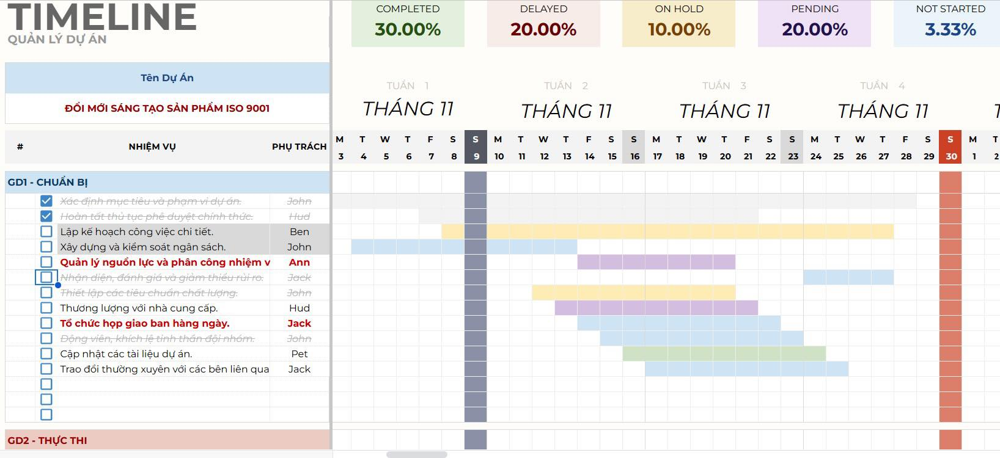
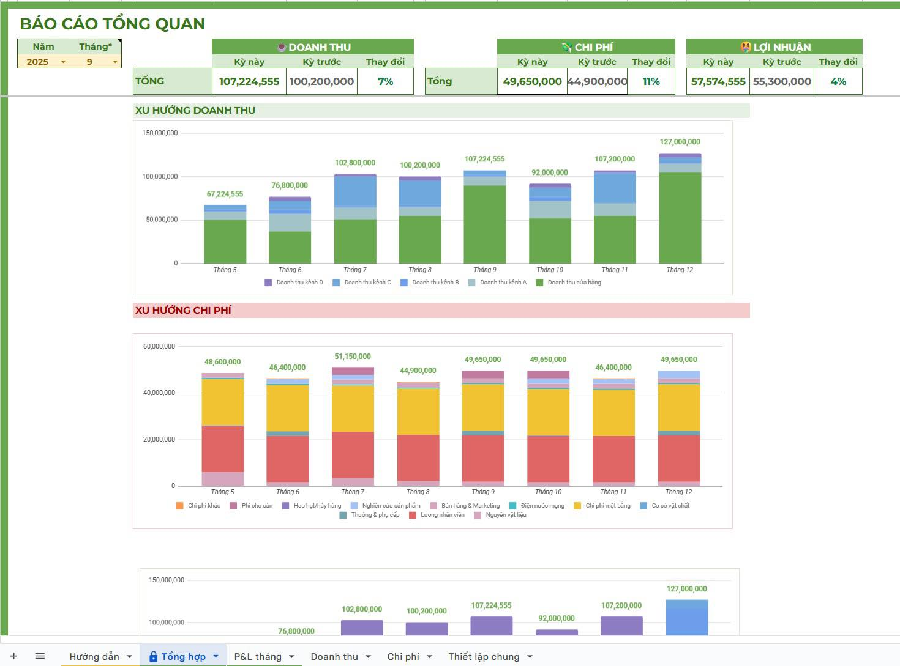
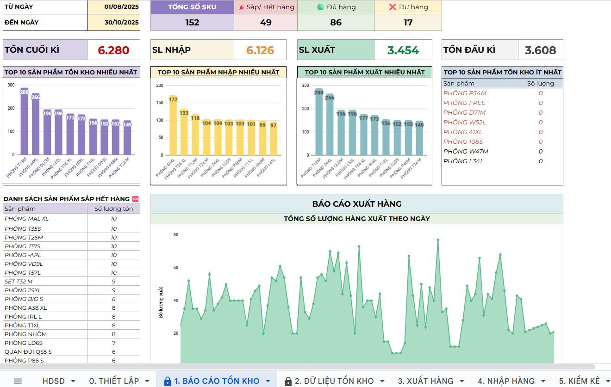
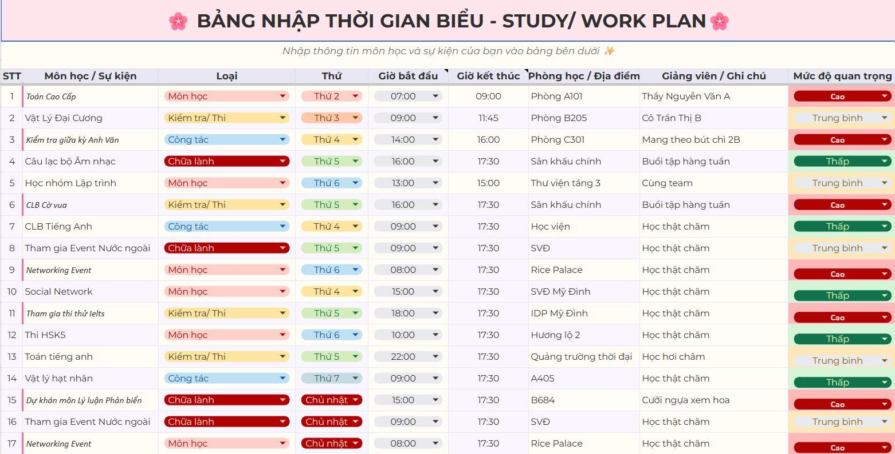

Góc Chia Sẻ:
Cùng Tomknowslittle Tối Ưu Hóa
Việc Học & Làm Việc
Chào các bạn, mình là Tomknowslittle.
Trong quá trình học tập và làm việc, mình luôn tự hỏi: "Làm sao để hoàn thành tốt mọi việc mà vẫn có thời gian để nghỉ ngơi?". Câu trả lời của mình nằm ở việc xây dựng một hệ thống làm việc cá nhân hiệu quả.
Tại đây, mình tổng hợp lại những "bí kíp" – những template mà mình đã sử dụng và tinh chỉnh qua thời gian. Mình rất vui được chia sẻ hoàn toàn miễn phí với các bạn. Hy vọng chúng sẽ giúp bạn bớt "đau đầu" và có thêm thời gian cho những trải nghiệm thú vị hơn!
Góc Cafe
Mình hy vọng các template này sẽ giúp việc học và làm việc của bạn trở nên nhẹ nhàng hơn. Nếu thấy hữu ích, bạn có thể mời mình một ly cafe nhỏ nhé!
Dù chỉ là một ly cafe nhỏ, đó cũng là sự khích lệ rất lớn để mình tiếp tục chia sẻ. Cảm ơn bạn rất nhiều! ❤️
Kho Tài Nguyên
Những template và công cụ giúp bạn làm việc hiệu quả hơn.

Academic Dashboard
Mẫu template quản lý tiến độ, theo dõi các bài báo và deadline. Giúp bạn tổ chức việc học tập một cách tối ưu.
Nhận Template
Event Management
Template lập kế hoạch, quản lý ngân sách và nhân sự cho các hoạt động. Bí quyết chạy sự kiện mượt mà.
Nhận Template
Personal Productivity
Mẫu habit tracker và quản lý mục tiêu cá nhân theo phong cách tối giản. Giúp bạn tập trung vào những điều quan trọng nhất.
Nhận Template
Finance Tracker
Quản lý thu chi cá nhân, theo dõi dòng tiền và lên kế hoạch tiết kiệm hiệu quả.
Nhận Template
Reading List & Notes
Lưu trữ các bài viết hay, ghi chú sách đã đọc và tổ chức kho kiến thức của riêng bạn.
Nhận TemplateTất cả tài nguyên
Truy cập toàn bộ thư mục chia sẻ với rất nhiều template và tips hữu ích khác.
Mở Google Drive